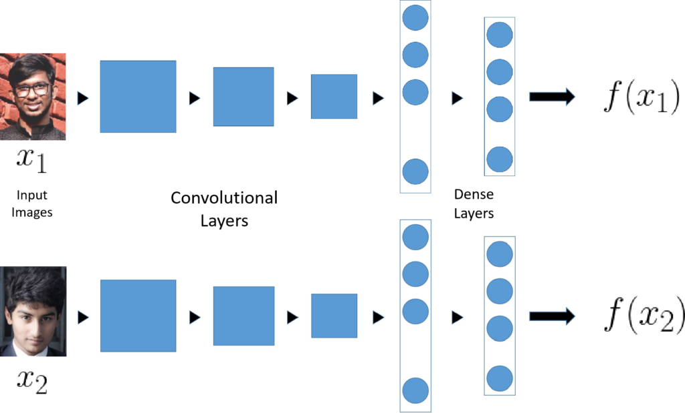
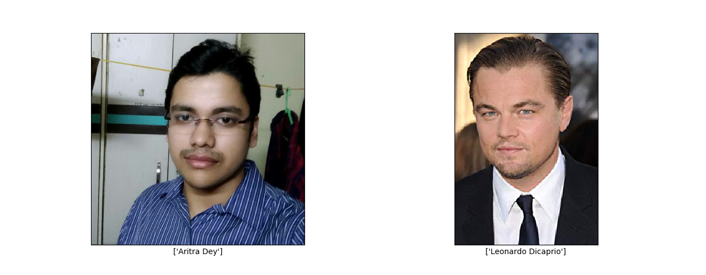
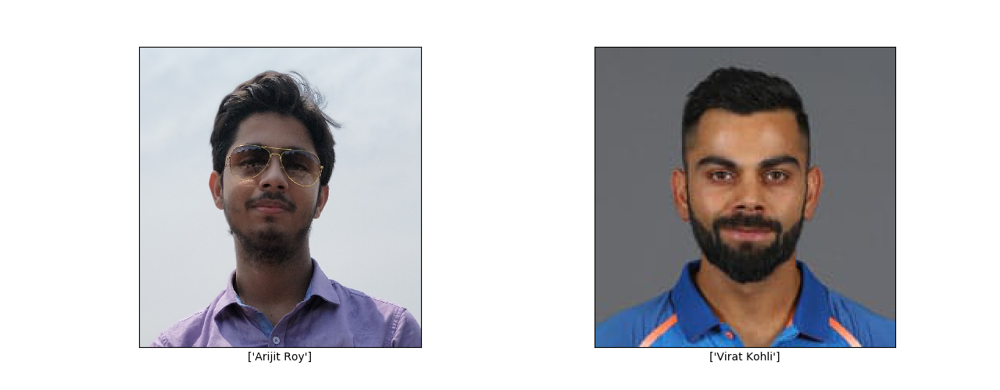
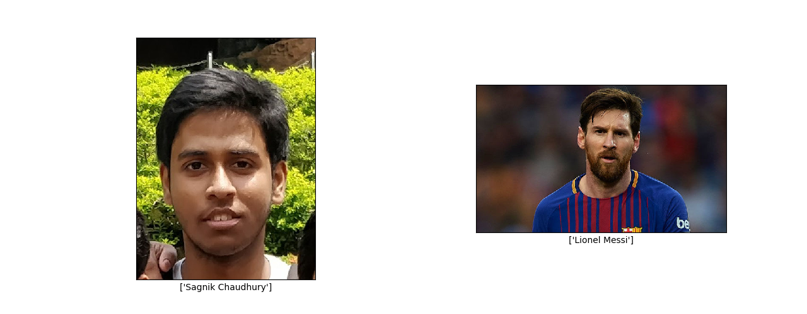
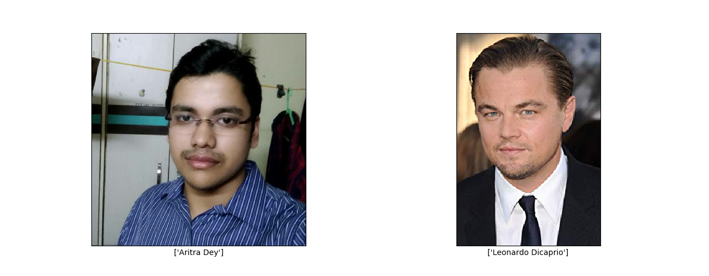
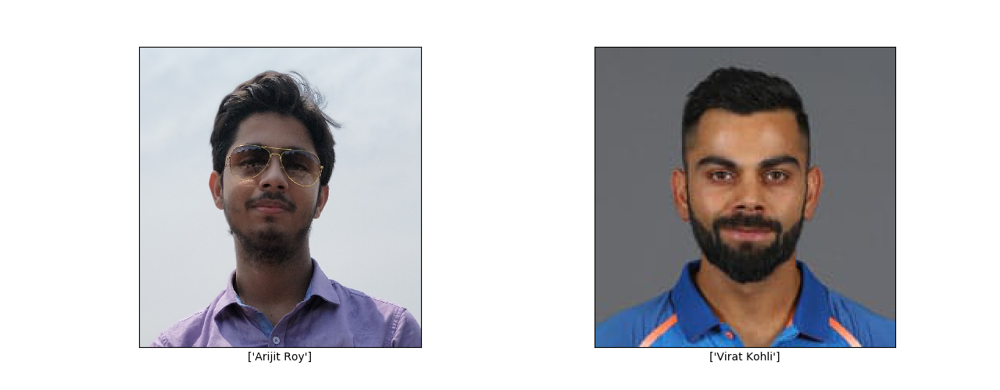
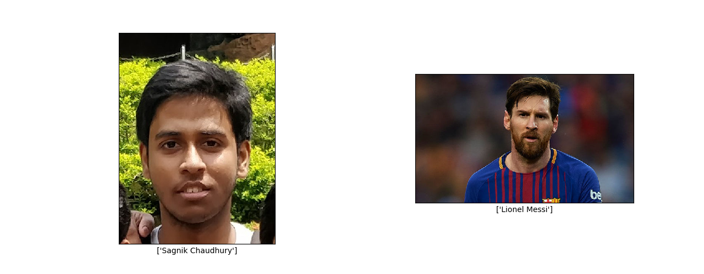

Nearest Celebrity Face using Deep Learning
Face Recognition
Face Recognition is one of the more interesting applications of Deep Learning i. At a single glance, it may seem like a simple classification problem; classify if this photo shows Soumik’s face or Souranil’s. You might be quick to jump to the conclusion, oh, the handsome face on the right belongs to Soumik and the ugly face on the left belongs to Souranil but, Ahem!!! We beg to differ.
See, the problem with traditional ConvNets is that they need to look at lots of images of your face and lots of other faces to learn to correctly classify them; maybe a thousand images from each category. Imagine yourself as the teacher of a class where you want to install a system, which monitors every student and recognize them by faces so that they would not bunk classes (poor students 😓). In order to do so you have to collect 1000 mugshots of each of your students!!! Even if you manage to do this insane task, just imagine having to retrain the model again if a new student decides to join your lecture!!!
Ideally, we would want to verify the face of a person from any footage given only one photo of the person available in the database. Hence, our challenge, in this case, can be formalized as a One-Shot Learning problem. History has been witness to the fact that Deep Learning algorithms do not work well if you have only one training example.
One-Shot Learning
Let’s focus a bit more light on the problem discussed earlier with an example. Our dear friend Atul is supposed to appear for a video interview for a company and he wants to remain undisturbed during the interview, so he won’t allow anyone into his room other than Abhik who speaks a lot of Crox English and would help him with the interview (from behind the laptop of course). So, he wants sets up a system using his phone camera which would verify if the person who wants to enter his room is Abhik or not. Now, Atul can simply design a ConvNet with convolutional layers followed by a couple of fully connected layers ending in a softmax activation with 3 outputs corresponding to the three of us.
There are several demerits to this approach such as
- Atul does not have more than thirty of our mugshots which he painfully collected from Facebook and Instagram. Such a small training set would not be enough.
- If he decides to accept help from Avishek besides Abhik, he would have to retrain the model again (after painfully collecting his mugshots) in order for the algorithm to recognize Avishek also.
So, in order to make this work, Atul thinks of a different approach. Instead of building a model to differentiate various faces, he decides to build a model that would learn a Similarity Function D. Then that would say how similar the current image is with a mugshot of Abhik that is present in his dataset and he decides upon a similarity threshold τ upon meeting which the door will open.
D(image1, image2) <= τ means images are same, and
D(image1, image2) > τ means images are different
Siamese Networks
The job of the function D is to learn the level of difference between two different images of faces. A nice way to do this is by using Siamese Networks. While a traditional ConvNet consists of Convolutional layers followed by Fully Connected or Dense Layers which are then fed into a Softmax function to perform classification, in case of a Siamese Network, there is no Softmax unit, instead the last Dense layer acts as the output layers which gives a list or vector of numbers. Let us call the outputs for images x_1 and x_2, f(x_1) and f(x_2) respectively. Let’s say that the output layer has 128 fully connected units, hence, f(x_1) and f(x_2) will each be a vector of 128 numbers. f(x_1) and f(x_2) are called the Encoding of x_1 and x_2 respectively.

If we believe the encodings to be a good enough representation of the input images, we can define the function D as the square of norm of the difference between the Encodings.
\[D(x_{1}, x_{2}) = ||f(x_{1}) - f(x_{2})||^{2}\]
Now the question comes that how do we train such a network. Since the same network is used to compute the Encodings from two different images, we have to train the parameters so that the trained network defines as accurate Encoding.
Training a Siamese Network
One way to learn the parameters of the neural network so that it gives you an accurate enough encoding for the images is to define an applied gradient descent on the Triplet Loss Function. In this case, we will have an anchor image, a positive image (the same person as the anchor image) and a negative image (a different person from the anchor image). Now we train the Siamese Network so that the distance between the anchor and the positive image is minimized. This also increases the distance between the anchor and the negative image is maximized. The fact that at each instance, we are looking at three images gives rise to the terminology Triplet Loss. The dataset, in this case, should consist of multiple triplets of Anchor, Positive and Negative Images.

Learning Objective
For Positive Image,
\[D(A, P) = ||f(A) - f(P)||^{2}\]
For Negative Image,
\[D(A, N) = ||f(A) - f(N)||^{2}\]
Learning Objective is
\[D(A, P) - D(A, N) + \alpha \leq 0\]
where α is defined as a margin and the Loss Function is given as
\[loss = \sum_{i=1}^{n} max(||f(A_{i}) - f(P_{i})||^{2} - ||f(A_{i}) - f(P_{i})||^{2} + \alpha, 0)\]
where n is the number of triplets in the dataset.
All the ideas till this point have been presented in the paper FaceNet by Florian Schroff, Dmitry Kalinichenko, and James Philbin.
After having trained the FaceNet on a large Triplet Dataset, we can use it to verify any face. Now, Atul would only need to store the Encodings of the faces of Abhik and Avishek. Then he would have to decide upon the value of Similarity Threshold τ. Whenever someone approaches the door, his face will be localized and passed through the FaceNet. If their D value is less than τ then it is a match!!!
Extending the Idea to Nearest Celebrity Face
I always wondered about those Facebook applications which used to predict stuff like which Celebrity or Footballer you look like. I tried building a similar application using the idea of FaceNet. Instead of keeping images of existing people to be verified in the database, I collected images of famous celebrities from Google Images, closely cropped their faces and stored their Encodings in the database. The Encodings were generated by a pre-trained FaceNet with an Inception backbone. Now theoretically, if I input some of my friends’ faces, they should ideally match the closest image in the database. Well, I tried implementing it and the results were hilarious 😂
   
  
The project can be found at https://github.com/soumik12345/Nearest-Celebrity-Face. If you like the project and found the results to be hilarious, please leave a star on the Github repository. For more such exciting articles, stay tuned at http://geekyrakshit.dev.